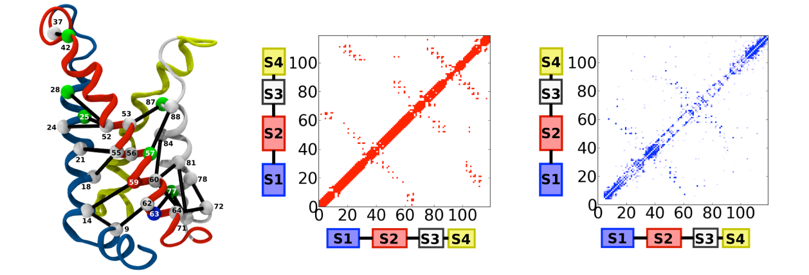

ARE NETWORKS OF COEVOLVING RESIDUES INFORMATIVE OF PROTEINS’ STRUCTURAL DYNAMICS?

The intimate relation between proteins' function and structural dynamics suggests that specific networks of
residue-residue interactions might be more conserved than the primary structure. The functional mechanics of proteins is
exquisitely sensitive to the topology of this network, thus a change in one position of the chain ought to be associated
by a compensatory one in a different position. These constraints have arguably left a distinct imprint on the distribution
of sequences encoding for each specific family of proteins. It is then of crucial relevance to characterize patterns and
regularities in large multiple sequence alignments reflecting these specific evolutionary 'design principles'. In
particular, to identify networks of co-evolving residues, an extremely fruitful approach is based on a probabilistic
model based on a set of pairwise interactions. The least constrained functional form that reproduces single- and
two-site joint frequencies is that of a 21-states Potts model. We have used these approaches to identify the sequence
determinants of voltage sensitivity in the family of Voltage Gated Ion Channels and to glean insight into the activation
mechanism of TRP channels. We are actively developing novel methodological approaches to further explore the link between
coevolution and structural dynamics. E. Palovcak, L. Delemotte, M. Klein, and V. Carnevale. Comparative sequence analysis suggests a conserved gating
mechanism for TRP channels. JOURNAL OF GENERAL PHYSIOLOGY, 2015, DOI:10.1085/jgp.201411329.
E. Palovcak, L. Delemotte, M.L. Klein, V. Carnevale Evolutionary imprint of activation: The design principles of
VSDs THE JOURNAL OF GENERAL PHYSIOLOGY 143 (2), 145-156.
E. Palovcak, L. Delemotte, M. L. Klein, and V. Carnevale, Genomics-aided structural modeling of an antiparallel
homodimeric fluoride channelin BIOPHYSICAL JOURNAL, vol. 106, p. 148a, 2014.
V. Carnevale, E. Palovcak, L. Delemotte, and M. Klein, Networks of coevolving residues in voltage sensor domains.in
BIOPHYSICAL JOURNAL, vol. 106, p. 743a, 2014.
E. Palovcak and V. Carnevale, Correlating residue coevolution and function in a conserved voltage-sensing domain. in
BIOPHYSICAL JOURNAL, vol. 104, p. 277, 2013.